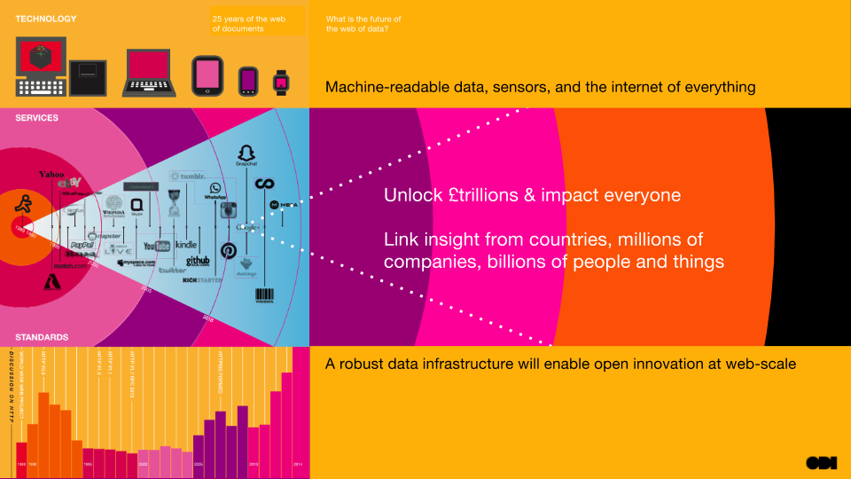

Data knows no boundaries
By Peter Wells and the ODI Team
Our vision is “Knowledge for everyone”. We believe that the web and open innovation are fundamental to the future health of our economy, our environment and our society. We believe that to address local, national and international challenges requires people around the world to innovate with data. We believe that the UK’s exit from the EU will create just one more boundary that the web will overcome
"The UK is entering uncharted waters." Image 'A New Beginning' by Thomas Hawk, (CC BY-NC 2.0)
While the ODI is headquartered in the UK, our mission is to “connect, equip and inspire people around the world to innovate with data“. We have franchises across the UK and in 20 countries around the world. We are part of a global community.
The ODI’s network of nodes and members span the world. In just the last few weeks our own team have been launching a startup incubator in Mexico; developing transport data infrastructure in the UK; working with the Tanzanian government and supporting Eurasian open data leaders.
The United Kingdom has voted to leave the European Union (EU). The UK’s Prime Minister has resigned and said that a new Prime Minister will need to decide when to trigger Article 50 of the Treaty of Lisbon. After this point the UK will have two years to negotiate its withdrawal unless all other member states agree to allow negotiations to continue. The UK is the first state to ever withdraw from the EU so we are entering uncharted waters.
We know we have to think globally and locally: Data infrastructure exists in cities, sectors and nations. We build data infrastructure by getting these different parts to work together. A strong data infrastructure is interconnected and interoperable. The web of documents was designed to be open and global. The same applies to the web of data.
The ODI will help the UK play a strong part in building this future.

The UK’s exit from the EU will create just one more boundary that the web will overcome.
The impact of exiting the EU
Whatever the politicians decide, the EU will continue to have an impact on the UK.
Businesses are unlikely to create new services solely for the UK market: they will simply offer the same services across the region. Whilst UK businesses that have taken advantage of geographic proximity and the growth of common regulation to expand into the digital single market will still need to abide by EU regulations.
The new General Data Protection Regulations (GDPR) were specifically designed to cross national boundaries by legislators from the UK and other EU states. Similarly the free flow of data initiative, the EU’s movements to bring common standards to businesses like Uber, and its antitrust actions against Google will affect the services that UK citizens receive.
As part of its negotiations to withdraw from the EU, the UK will need to debate the data-related legislation that is affected by its previous membership. The UK may choose to keep some; it may want to revise others (perhaps this is an opportunity to get rid of or clarify database rights?); it may want to discard others; it will find that some are subject to other international treaties. We can only hope that in these debates there will be more facts and less spurious statistics than in the referendum debate itself.
The EU has been a strong supporter of open data with projects such as the European Data Portal, the European Data Science Academy and its startup incubator, ODINE. Over the past few years we have both worked on these projects and helped the EU to understand open data uptake and develop tools for open data publication. The knowledge gained from these projects, or similar ones in the future, remains open for anyone to use.
Academia could face new challenges. Science has been a great European Union success story, but UK academics will now have a reduced chance of funding and collaboration opportunities. It is estimated that British higher education providers receive 16% of their research income from the EU. The European Union is taking promising steps in providing open access to scientific information. If researchers are going to have less funding or find it less easy to collaborate directly then open access and open data will be ever more important in both the UK and the EU.
The UK’s changing priorities
The economic challenges that the UK is predicted to face due to its choice to leave the EU will mean that the government will need to place a strong focus on both public sector efficiency and economic growth. Open innovation, fueled by access to data, is crucial to realising those goals.
The UK will lose its power to make legislation in the EU but it has not lost its soft power and ability to affect data policy and standards. Just as the UK works globally through organisations like the World Wide Web Consortium (W3C) or the D5 group of nations it can continue to work together with other EU countries through initiatives such as the open banking standard or the UK-France data taskforce. The UK will need to continue to work together with other nations. All of these initiatives can be expected to continue and to continue to scale.
The UK should use these initiatives, and the international trade negotiations that will be necessary upon leaving the EU, to push for more open data, stronger data infrastructure, innovation, transparency, accountability, and open standards. This will help with both efficiency and growth.
The UK government’s soon-to-be-published digital strategy is a great opportunity for it to provide confidence that the UK will continue to be a world leader in using data.
Just another boundary
The UK’s exit from the EU will create just one more boundary that the web will overcome.
The UK is entering uncharted waters. We remain confident, fearless and focused on building the open future and creating sustainable data infrastructure locally, nationally, and globally.
Many regulatory differences and geopolitical boundaries already exist between nations. We face them as businesses and individuals every day. From our perspective the direction of travel is clear: the web is helping to bring down barriers across the world.
If you have ideas or experience in open data that you’d like to share, pitch us a blog or tweet us at @ODIHQ.